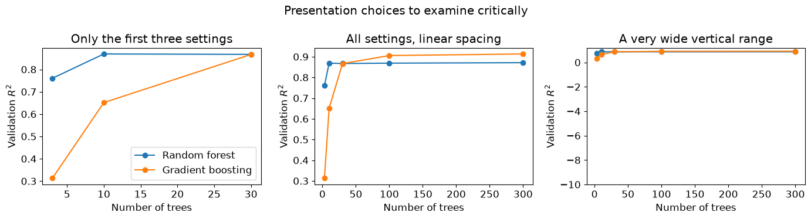

By the end of this chapter, you should be able to:
Identify why an ML result alone may not answer the question a decision-maker cares about.
Recognize how an audience’s background and purpose affect the choice of language, examples, and detail.
Present results with appropriate baselines, context, and recommendations.
Distinguish model probability estimates from evidence about their reliability.
Communicate limitations and uncertainty without hiding useful findings.
Identify misleading visualizations and construct fair comparisons.
Imports
Show imports and setup
from pathlib import Pathimport matplotlib.pyplot as pltimport numpy as npimport pandas as pdfrom IPython.display import displayfrom sklearn.base import clonefrom sklearn.compose import TransformedTargetRegressor, make_column_transformerfrom sklearn.ensemble import GradientBoostingRegressor, RandomForestRegressorfrom sklearn.impute import SimpleImputerfrom sklearn.model_selection import train_test_splitfrom sklearn.pipeline import make_pipelinefrom sklearn.preprocessing import OneHotEncoder, OrdinalEncoder, StandardScalerDATA_DIR = Path("data") if Path("data").is_dir() else Path("book") /"data"plt.rcParams["font.size"] =12
Keep the goal and the audience in view
An applied ML project rarely belongs to one person. Teammates need to understand an approach before they can improve it. Someone must decide whether the results justify further work, and someone may need to maintain the model after deployment. Good technical work can go unused when the people who need it cannot understand its value or its limitations.
Communication is therefore part of the ML workflow, from agreeing on the problem to sharing results. The aim is to help others make informed decisions. That means explaining why the work matters while being honest about what the evidence supports.
In this chapter, you will work through three communication tasks: explain a method to a newcomer, help a project team decide what to do next, and present a fair model comparison. For each task, make a choice before reading the discussion. Write a reason, compare it with a partner’s if possible, and then revisit your choice. The aim is to practise decisions you can use in your own work.
Task 1: Explain a method to a newcomer
Compare two explanations
You already know hyperparameter optimization. Here, focus on how it is explained rather than learning a new method. Read the two original explanations below and consider how they would have felt on Day 1 of CPSC 330.
Explanation 1
Machine learning algorithms, like an airplane’s cockpit, typically involve a bunch of knobs and switches that need to be set.
For example, check out the documentation of the popular random forest algorithm here. Here’s a list of the function arguments, along with their default values (from the documentation):
Holy cow, that’s a lot of knobs and switches! As a machine learning practitioner, how am I supposed to choose n_estimators? Should I leave it at the default of 100? Or try 1000? What about criterion or class_weight for that matter? Should I trust the defaults?
Enter GridSearchCV to save the day. The general strategy here is to choose the settings that perform best on the specific task of interest. So I can’t say n_estimators=100 is better than n_estimators=1000 without knowing what problem I’m working on. For a specific problem, you usually have a numerical score that measures performance. GridSearchCV is part of the popular scikit-learn Python machine learning library. It works by searching over various settings and compares them using cross-validation on the training data.
The “grid” in “grid search” comes from the fact that it tries all possible combinations on a grid. For example, if you want it to consider setting n_estimators to 100, 150 or 200, and you want it to consider setting criterion to 'gini' or 'entropy', then it will search over all 6 possible combinations in a grid of 3 possible values by 2 possible values:
criterion='gini'
criterion='entropy'
n_estimators=100
1
2
n_estimators=150
3
4
n_estimators=200
5
6
Here is a code sample that uses GridSearchCV to select from the 6 options we just mentioned. The problem being solved is classifying images of handwritten digits into the 10 digit categories (0-9). I chose this because the dataset is conveniently built in to scikit-learn:
from sklearn.datasets import load_digitsfrom sklearn.ensemble import RandomForestClassifierfrom sklearn.model_selection import GridSearchCV# Reserve a test set before comparing settings.digits = load_digits()X_digits_train, X_digits_test, y_digits_train, y_digits_test = train_test_split( digits.data, digits.target, test_size=0.2, stratify=digits.target, random_state=123)grid_search = GridSearchCV( RandomForestClassifier(random_state=123), param_grid={"n_estimators": [100, 150, 200], "criterion": ["gini", "entropy"]},)grid_search.fit(X_digits_train, y_digits_train)grid_search.best_params_
{'criterion': 'entropy', 'n_estimators': 150}
The output shows which of the six combinations had the highest mean cross-validation score in this search. This does not establish that the settings are universally best; our separate test set remains untouched.
By the way, these “knobs” we’ve been setting are called hyperparameters, and the process of selecting them is called hyperparameter optimization or hyperparameter tuning.
Explanation 2
The following explanation is reproduced from the original grid-search article, as in the lecture notes. Treat it as material to critique, including its technical wording. The code is shown as text rather than executed because it assumes a dataset X, y that the article excerpt does not define.
An introduction to Grid Search
This article will explain in simple terms what grid search is and how to implement grid search using sklearn in python.
What is grid search?
Grid search is the process of performing hyper parameter tuning in order to determine the optimal values for a given model. This is significant as the performance of the entire model is based on the hyper parameter values specified.
Why should I use it?
If you work with ML, you know what a nightmare it is to stipulate values for hyper parameters. There are libraries that have been implemented, such as GridSearchCV of the sklearn library, in order to automate this process and make life a little bit easier for ML enthusiasts.
How does it work?
Here’s a python implementation of grid search using GridSearchCV of the sklearn library.
First, we need to import GridSearchCV from the sklearn library, a machine learning library for python. The estimator parameter of GridSearchCV requires the model we are using for the hyper parameter tuning process. For this example, we are using the rbf kernel of the Support Vector Regression model(SVR). The param_grid parameter requires a list of parameters and the range of values for each parameter of the specified estimator. The most significant parameters required when working with the rbf kernel of the SVR model are c, gamma and epsilon. A list of values to choose from should be given to each hyper parameter of the model. You can change these values and experiment more to see which value ranges give better performance. A cross validation process is performed in order to determine the hyper parameter value set which provides the best accuracy levels.
We then use the best set of hyper parameter values chosen in the grid search, in the actual model as shown above.
If you want to know how to use grid search and cross-validation and train and test a model check out this article.
Hope this article helped you. Until next time…Adios!
Choose how to explain
Your teammate knows Python but has not studied ML. Use the two explanations above to help you decide.
1. Which opening would you use to explain why you are trying several random-forest settings?
A. “We are performing hyperparameter optimization using cross-validation.”
B. “The model has settings we must choose before training. We will compare several choices using held-out portions of our training data.”
C. “Random forests have settings such as max_depth, max_features, and n_estimators.”
What knowledge does each opening assume? When might A be appropriate?
2. You have room for one worked example. Which plan would you choose?
A. Introduce random-forest settings, illustrate their combinations in a table, then use those same settings in code and explain the output.
B. Introduce random-forest settings, demonstrate search with support vector regression, then show a result from a third model to illustrate the range of applications.
C. Start with complete search code, then define all its unfamiliar terms in a glossary at the end.
What would the reader need to keep track of in each plan? Could you borrow anything useful from another plan?
3. The reader now understands how grid search tries combinations, but asks whether tuning always helps. What would you add next?
A. A list of more hyperparameters they could tune.
B. A comparison of a default model and a tuned model on the same evaluation data, with the relevant scores beside the code.
C. A diagram showing how the grid-search loop runs.
Explain why your choice addresses this question. Which addition would help if the reader instead asked how the search works?
Choose individually and justify each answer before opening the discussion. If you disagree with a partner, identify which assumption about the reader differs.
Discussion after you have chosen
For this newcomer, 1B provides a purpose before technical labels; A may be efficient shorthand for an experienced teammate. C gives examples of settings but leaves their purpose unclear. B still assumes the reader understands why we hold out data, so that may need explanation too.
2A reduces the number of unfamiliar ideas the reader must connect at once. B could help demonstrate breadth later, once the procedure is understood. C can be useful as a reference for an experienced reader, but a glossary alone does not explain how the pieces fit together.
3B supplies evidence about whether tuning helped in this experiment. It does not establish that tuning always helps. C addresses a different question about the procedure; A expands the list without answering either question. Compare the images in the original explanations too: does each clarify an idea, or mainly attract attention?
An explanation should give collaborators enough understanding to ask questions, identify assumptions, or suggest improvements. Return to the hyperparameter-optimization activity: what helped you understand the purpose of the method, and what required knowledge that a newcomer would not have?
Build from familiar ideas
Once you understand a method, it becomes easy to forget which ideas were difficult when you first encountered it. This is sometimes called the curse of knowledge. You might explain grid search using “cross-validation” and “hyperparameter tuning” without noticing that your audience needs those ideas explained too. Before sharing an explanation, identify the background knowledge each step assumes.
Introduce the concept before relying on its label when the audience is unfamiliar with it. Explanation 1 begins with knobs and switches, then connects them to random-forest settings. It establishes the problem of choosing settings before naming hyperparameter optimization. Explanation 2 introduces “hyper parameter tuning” immediately, which assumes the reader already knows what that means.
Knowing a term is different from understanding the idea it names. Saying “grid search performs hyperparameter optimization” helps only if the reader already understands hyperparameter optimization.
Optional video: Richard Feynman illustrates the distinction between knowing a name and understanding something in this short video. As you watch, consider what someone would need to explain about grid search to demonstrate understanding beyond naming it.
An analogy can provide a starting point, but it has limits. A tree count takes integer values rather than arbitrary continuous settings. Use the analogy to help readers understand a particular idea, without implying that every detail transfers.
Build new ideas in manageable steps and reuse the same example across prose, diagrams, code, and results. Explanation 1 follows the random-forest settings into a six-combination table and then into code. Explanation 2 switches quickly to support vector regression and several parameters; consider how much background a reader needs to follow it.
The first explanation introduces one piece at a time: settings we must choose, a random-forest example, the difficulty of choosing those settings, and a search procedure that compares them. It then makes the procedure concrete through a table, code, and output, before naming hyperparameter optimization. Each step prepares the reader for the next. When revising an explanation, check whether a paragraph asks the reader to absorb several unfamiliar ideas at once.
Starting with familiar examples is especially helpful when teaching an unfamiliar method. In a project update, however, readers may need the conclusion first, followed by evidence and technical detail. Choose the order that serves the reader rather than treating one explanation style as universally correct.
Use contrasts to clarify boundaries
One example can show how a method works without making clear when it is useful or how it differs from related methods. A carefully chosen contrast can help. Comparing a model before and after tuning addresses whether tuning helped in that experiment. Comparing grid search with randomized search clarifies that trying every listed combination is a feature of grid search, rather than a requirement of hyperparameter tuning.
Choose contrasts that answer a likely question or misconception. Adding many related methods at once can make an explanation harder to follow. Reuse the running example where possible so the reader can focus on the difference you want to explain.
Show evidence alongside the approach
When including code, show its relevant output and explain what to notice. Place the output close to the code or claim it supports, so readers can connect the procedure to the result without searching ahead. Explanation 1 lets the reader see what the search selected. Explanation 2 shows how to retrieve the settings but no output to interpret. Neither example alone establishes that tuning provides a practically important improvement; that would require a relevant comparison with a baseline.
Use images or diagrams when they explain the process or reveal behaviour. In the activity, compare the cockpit analogy with the meme: what does each contribute to understanding? An attractive or amusing image can draw attention without explaining the method.
Make communication a conversation
Share proposed approaches and early findings while teammates can still influence the work. Ask a concrete question: “Does this split represent how we will use the model?” invites more useful feedback than “Any thoughts?” When a colleague raises a concern, first check that you understand it before defending your choice.
You can check shared understanding by asking someone to describe how they would use the result or what they think the main limitation is. If their interpretation differs from yours, revise the explanation together.
Include detail because it helps the audience, not simply because you worked hard on it. For example, extending the cockpit analogy into a classification of numeric “knobs” and categorical “switches” might distract from the immediate question: how do we choose settings? A detail can be elegant or interesting to the writer without helping the reader. Ask what each detail helps the audience understand or decide; remove it or move it to optional supporting material when it does not serve that purpose.
Keep implementation notes and experiment records available for collaborators who need them, while letting the main explanation stay focused.
Task 2: Help a team decide what to do next
Your team is investigating house-price predictions to help staff advise sellers about asking prices. The manager needs to decide whether to fund a limited pilot. You receive this draft update:
We compared random forests and gradient boosting. The best validation score shows which model we should deploy. Accurate predictions will help sellers get better prices. I will send the winning plot.
The comparison uses a single training/validation split and several tree counts. A separate test set is reserved. No pilot has measured the effect on asking-price decisions or sale outcomes. Keep this update in view: you will improve its claims here, then choose a visualization for it in Task 3.
Choose what the manager needs
1. What is the most useful question to settle before recommending a pilot?
A. Which algorithm has the highest validation score?
B. How would staff use the predictions, and what would count as a better outcome than their current approach?
C. How many additional hyperparameter combinations can we try?
Explain what your choice would change about the project. Is there still a role for the other questions?
2. You have two minutes for the update. Which detail would you move to supporting material?
A. The comparison with the current approach.
B. The full list of hyperparameter combinations tried.
C. An important condition under which the model performs poorly.
What change in audience or purpose could make your chosen detail essential?
3. Given the evidence available, which next step is best justified?
A. Deploy the model with the highest validation score; the score establishes the benefit to sellers.
B. Stop the project because no benefit to sellers has been measured yet.
C. Check whether the evaluation reflects intended use and agree on how a limited pilot would assess decisions and outcomes.
Identify one claim in the draft that needs qualification. Write a replacement before reading on.
Discussion after you have chosen
1B connects the prediction task to a decision and an objective. A and C may help choose a model, but cannot establish what staff or sellers need.
For this manager, 2B usually belongs in supporting material. A collaborator reproducing the search may need that list. The baseline and failure conditions affect whether the pilot is worth funding, so they belong in the main update.
3C treats the validation comparison as useful but incomplete evidence. A jumps from prediction quality to an unmeasured benefit; B treats an unanswered question as a reason to abandon investigation. A more defensible claim is: “The validation comparison can help us select an approach for further evaluation; it does not yet show that using it improves sale outcomes.”
From a prediction task to a useful decision
Imagine your team is building a video recommender using records of which videos users clicked. You improve its ability to predict clicks, but colleagues still find the recommendations disappointing. What might be missing?
A click is observable, but it need not mean that someone enjoyed a video. A recommendation might attract attention while leaving the viewer dissatisfied. Before choosing a target or metric, the team needs a shared understanding of what it wants to achieve.
Distinguish four pieces of the project:
Piece
Question
Video recommendation example
Organizational goal
What outcome do we want to improve?
Help viewers find videos they value.
Prediction task
What can the model estimate?
Whether a viewer will click a candidate video.
Decision
What action will use that estimate?
Which videos to recommend and in what order.
Evidence
How will we assess whether the approach helps?
Offline evaluation, followed by an appropriate evaluation of viewer satisfaction.
These pieces are connected, but they are not interchangeable. Better predictions of a proxy such as clicks do not by themselves establish progress toward the broader goal.
The same distinction applies to churn. Predicting who will leave may help a team decide whom to contact. It does not establish that a retention offer will persuade those customers to stay. That benefit requires additional evidence.
The decision-maker is the person or team choosing an action. The decision variable is what they can change directly, such as which videos to display and in what order. Their objectives are the outcomes they care about, such as viewer satisfaction. The context affects how an action leads to those outcomes: a viewer’s available time, the available videos, and limited display space can all matter. The model estimates clicks; the team still has to decide how to use those estimates within these constraints.
Ask what alternatives the decision-maker has, including the current recommendation approach. Different objectives or constraints can lead to different choices even when the model’s predictions stay the same.
Discuss these connections early. Agree on the decision, the current alternative, what counts as improvement, and what information will be available when predictions are made. Otherwise, teammates can spend days solving different versions of the problem.
Understand what your audience needs
A teammate implementing preprocessing may need exact feature definitions and code. A manager deciding whether to fund a pilot needs the expected benefit, supporting evidence, costs, and risks. A person affected by a prediction may need an understandable explanation and a way to question the outcome.
Ask what the audience already knows, what they need to decide, and what detail will help them do so. Adjust the explanation without changing the underlying claim. For a mixed audience, begin with the shared problem and main finding, then provide technical details where readers can find them. ### Put scores in context
A metric needs context. Suppose a classifier achieves 98% accuracy. That sounds impressive until we learn that always predicting the majority class achieves 97.5%. The improvement may still matter, but accuracy alone does not tell us whether it addresses the costly mistakes in this application.
Report the relevant baseline, evaluation setup, and consequences of errors. Connect the finding back to the original goal and explain what action, if any, it supports. Include operational considerations such as data updates, latency, maintenance, and monitoring when they affect the decision.
Separate evidence from interpretation
Consider a hypothetical avocado forecasting project, building on Chapter 19. These statements play different roles:
Role
Example
Observation
On our chronological validation period, MAE was 15% lower than a forecast that reused the previous week’s price.
Interpretation
The model may give procurement staff more useful price forecasts under similar conditions.
Recommendation
Run a limited pilot to assess whether using the forecasts improves purchasing decisions.
The observation needs a defined target, units, horizon, evaluation period, and enough detail to reproduce the comparison. The interpretation depends on how well that evaluation represents future use. The recommendation also depends on costs, risks, and alternatives.
A lower forecasting error does not establish a particular dollar saving. To claim that the system saves $45,000 per month, we would need evidence linking forecast-informed purchasing decisions to those savings. If the number comes from a simulation, state its assumptions and describe it as an estimate rather than a measured deployment outcome.
Give collaborators an update they can use
A useful update answers four questions: What did you investigate? What did you find? What remains uncertain? What happens next, or what do you need from the team?
For example, a hypothetical update might read:
I compared our weekly price model with the previous-week baseline using a chronological validation period. Its MAE was 15% lower, but errors were larger during holiday weeks. We have not measured purchasing savings. I recommend a small pilot before changing the buying process. Could the procurement team confirm when forecasts would need to be available and which decisions they would inform?
This explains progress and gives collaborators something specific to respond to. When reporting a blocker or an unsuccessful experiment, use the same structure: explain what you learned and which choice it affects.
Make supporting material usable too. Label plots and tables, record the data version, split, metric, and model settings, and share the code or notebook that produced the result. A teammate should be able to distinguish two experiments without reconstructing your memory of them.
Communicate limitations and uncertainty honestly
Honesty does not require making every finding sound inconclusive. It requires matching the strength and scope of a claim to the evidence. “This approach improved recall in our validation experiment” can be a useful finding even when “This system will reduce fraud losses” has not been established.
Reporting overall performance also differs from explaining an individual prediction. “How often does the fraud model make mistakes?” and “Why was this transaction flagged?” need different evidence. For the second question, a stakeholder may need to know which recorded inputs influenced the model’s output. Such an explanation describes the model’s behaviour; it does not establish that those inputs caused fraud or that the transaction is fraudulent. Be clear about what the explanation can support and where it is uncertain.
Check what a probability supports
In another project, a fraud classifier assigns a transaction a probability of 0.9. A colleague wants to report: “We are 90% sure this model is trustworthy.” Which response is best supported?
A. Agree: a high probability demonstrates reliability.
B. Report the model’s estimated fraud probability, and assess its reliability using outcomes on relevant held-out examples.
C. Avoid reporting probabilities because an individual prediction cannot be certain.
Choose and explain. What would you want to observe among many transactions assigned probabilities near 0.9? Write your expectation before reading the next section.
What does predict_proba tell us?
Suppose a classifier returns a fraud probability of 0.9 for a transaction. This is the model’s estimated probability for that class. It is not a guarantee, and it is not a statement that we are 90% certain the model is trustworthy.
B distinguishes the model’s output from evidence about its reliability. A confuses those two things; C discards potentially useful information merely because it is uncertain.
One question is whether the model’s probabilities are calibrated. Among many transactions assigned probabilities near 0.9, we would expect roughly 90% to be fraudulent if the probabilities are well calibrated for that population. We assess this pattern using outcomes on held-out examples. A single prediction cannot establish calibration, and an overall pattern can hide problems for particular groups or conditions.
A model can rank fraudulent transactions well while producing poorly calibrated probabilities. Conversely, a model that assigns every transaction the overall fraud rate might be calibrated in aggregate but unhelpful for deciding which transactions to investigate. Reliability of probabilities and usefulness for a decision are related questions, not identical ones.
Chapter 7 introduced the loss used to train logistic regression. Here our concern is what we can responsibly say about a fitted model’s outputs. Training with a probability-based loss does not by itself demonstrate that probabilities will be reliable on future data.
How much should we trust a reported score?
A validation or test score summarizes performance on particular examples under a particular evaluation design. A different sample could give a different score. A small difference between models may be sensitive to the split, and repeated searches can make the best validation result look overly optimistic. Preserve an untouched test set for the final evaluation of the selected approach.
Variation across cross-validation folds can help reveal instability, but a fold-score standard deviation is not automatically a confidence interval for future performance. Even a precisely estimated score on historical data does not settle what happens when the population, data collection, or operating conditions change.
Keep these questions separate when communicating:
What probability does the model assign to this outcome?
How reliable are those probabilities on relevant held-out data?
How uncertain is our estimate of overall performance?
How well does the evaluation represent the conditions where the model will be used?
Make limitations specific and actionable
“More data is needed” gives a team little guidance. A more useful limitation would be: “Our evaluation contains few holiday weeks, so we cannot yet assess holiday forecasting reliably. We should evaluate additional seasons before relying on the model for holiday purchasing.”
State the conditions evaluated, important failure modes, and what remains unknown. Then explain what the uncertainty means for the decision: proceed with monitoring, gather particular evidence, narrow the intended use, or postpone deployment. A limitation should help the reader reason about the result.
Avoid hiding qualifications in a footnote while making a broad claim in the headline. “Lower validation error on one year’s data; holiday performance remains uncertain” is more informative than “Model solves price forecasting.”
Task 3: Present a fair comparison
Return to the housing-project update from Task 2. The manager needs evidence for the next decision, and you need to choose what to show. A plot can make a comparison easier to understand, but presentation choices can also make the same results appear to support different stories. Labels, axis ranges, and the examples you choose to show are part of the claim.
A headline to examine critically.
Before accepting a model-performance headline, ask what task was evaluated, on which population, against which baseline, and using which metric. What additional evidence would you need before treating the result as useful in practice?
One set of results, several stories
We will return to the Kaggle housing data used in Chapter 10 and compare random forests with gradient boosting for several tree counts. Our purpose is to examine how plotting choices affect interpretation, rather than to conduct a thorough model search.
The following setup is folded because it repeats familiar preprocessing. It fits transformations on the training portion only. We reserve a test set and use a separate validation set for the repeated comparisons below.
ordinal_features_reg = ["ExterQual","ExterCond","BsmtQual","BsmtCond","HeatingQC","KitchenQual","FireplaceQu","GarageQual","GarageCond","PoolQC",]ordering = ["Po","Fa","TA","Gd","Ex",] # if N/A it will just impute something, per belowordering_ordinal_reg = [ordering] *len(ordinal_features_reg)ordering_ordinal_reg
Both models are trained using a log-transformed target, with predictions converted back to dollars before calculating \(R^2\). The validation scores below therefore assess predictions on the original price scale. These are single-split comparisons with mostly default settings. Equal tree counts do not mean equal computation or equally thorough tuning of the two methods.
Predict how the story could change
Before viewing the plots, inspect the table. Your manager asks how the two methods compare across the tree counts tried. Which presentation would you choose?
A. Show only the smaller tree counts where the difference is easiest to explain.
B. Show all five settings with clearly labelled axes and a shared vertical scale, separating training and validation results.
C. Show all five settings on a vertical scale wide enough that the curves look almost identical.
Justify your choice in terms of the manager’s question. Predict how A or C could change the apparent conclusion. Under what stated constraint might showing only smaller models be reasonable?
fig, axes = plt.subplots(1, 3, figsize=(14, 3.8))for model_name, group in results.groupby("model", sort=False): early = group.iloc[:3] axes[0].plot(early["n_estimators"], early["validation_r2"], marker="o", label=model_name) axes[1].plot(group["n_estimators"], group["validation_r2"], marker="o", label=model_name) axes[2].plot(group["n_estimators"], group["validation_r2"], marker="o", label=model_name)axes[0].set_title("Only the first three settings")axes[1].set_title("All settings, linear spacing")axes[2].set_title("A very wide vertical range")axes[2].set_ylim(-10, 1.2)for ax in axes: ax.set(xlabel="Number of trees", ylabel="Validation $R^2$")axes[0].legend()fig.suptitle("Presentation choices to examine critically")fig.tight_layout()plt.show()

B preserves the settings needed to answer the stated question. Compare that choice with the three panels above. The first panel omits the larger ensembles. That might be a reasonable restriction if only small models were feasible, but it needs to be stated and justified. Otherwise it can hide where the comparison changes. The second panel includes every setting, yet linear spacing compresses the smaller tree counts. The third uses a vertical range so wide that differences become difficult to see.
These examples illustrate why a plot needs both a clear question and an explanation of its scope. A restricted range is not inherently dishonest. The issue is whether the display supports the claim being made or conceals relevant evidence.
Show a fair comparison
Use a shared vertical scale when comparing the same metric, show the settings relevant to the question, and explain any non-linear axis. Here, a logarithmic horizontal axis makes multiplicative increases in tree count easier to compare. Separate panels keep training and validation results distinct.
fig, axes = plt.subplots(1, 2, figsize=(10, 4), sharex=True, sharey=True)for model_name, group in results.groupby("model", sort=False):for ax, column inzip(axes, ["train_r2", "validation_r2"]): ax.plot(group["n_estimators"], group[column], marker="o", label=model_name)for ax, title inzip(axes, ["Training", "Validation"]): ax.set_xscale("log") ax.set_xticks(n_estimators_values, labels=n_estimators_values) ax.set(xlabel="Number of trees (log scale)", title=title) ax.grid(alpha=0.25)axes[0].set_ylabel("$R^2$ on original sale prices")axes[1].legend()fig.suptitle("Housing model comparison: one fixed train/validation split")fig.tight_layout()plt.show()
This display allows us to compare the measured scores across all five settings. It does not establish that one algorithm is generally superior. Another split, different hyperparameters, or a different metric could change the comparison. The test set remains untouched; a final evaluation would come after choosing the approach.
When reviewing a visualization, check whether the axis ranges exaggerate or obscure differences, whether values or settings have been selectively omitted, and whether colours and labels make the comparison clear. Dual vertical axes are particularly risky for comparing two series because independently chosen scales can make them appear to agree or diverge.
Bar charts generally need a zero baseline because bar lengths encode magnitude. Line and scatter plots need not always start at zero; a narrower range can reveal useful variation. Make the scale clear and choose it to answer the question fairly. When areas or volumes encode quantities, their sizes should be proportional to those quantities rather than visually exaggerating differences.
Complete the housing update
Rewrite the draft from Task 2 for the manager, using the fair comparison. In at most 100 words, state an observation supported by the measured results, a limitation that affects the decision, and a next step. Choose what belongs in the main message and what should be supporting material. Do not invent benefits to sellers.
Exchange updates with a partner if possible. Ask them to describe what decision your update supports and what remains unknown. Revise any wording that led them to a stronger conclusion than you intended.
Chart choice matters too. In a histogram of prediction errors, changing the bin widths or boundaries can make the same errors look concentrated, spread out, or clustered into separate groups. Use bins that help answer the question, and check whether an apparent pattern depends on one particular choice.
Decoration can also compete with the evidence. A house-shaped graphic might attract attention to a housing-price comparison while making values harder to compare than simple points or bars. Start with the comparison readers need to make, then choose a chart that supports it. Do not force data into an attractive visual form that obscures the quantities or relationships. The visualization resources below call these pitfalls “dataviz ducks” and “glass slippers,” respectively; recognizing the problem matters more than remembering the labels.
A team wants to reduce the time staff spend routing customer-support requests. A classifier assigns each request to a department. On a random held-out sample of historical requests, its accuracy is 88%; always choosing the most common department gives 70%. The model uses only text available when a request arrives. Requests sent to the wrong department must be rerouted manually. You have not measured time saved, and a new product launch may change the kinds of requests received.
Write an update of at most 120 words for the support manager, who must decide whether to fund a pilot and has no ML background. Explain what the result supports, what remains uncertain, and what you recommend doing next. Include one specific question for the manager. Do not invent measurements.
Then explain two choices you made in the wording or selection of details. Finally, identify what you would add for a technical teammate checking the evaluation.
Review after writing
Does your update make the comparison understandable without relying on ML jargon? Does it distinguish routing accuracy from staff time saved? Have you explained why historical performance may not represent requests after the product launch? Your next step should address a specific unanswered question, and your question for the manager should help establish the decision, costs of mistakes, or evidence needed. Several recommendations can be reasonable if you justify them with the facts given.
Chapter summary
Applied ML is a team activity. Communication helps people agree on the problem, improve an approach, interpret evidence, and decide what to do next. A technically correct explanation is useful when the audience can understand its relevance and its limits.
Keep the organizational goal in view, and distinguish it from the prediction task and the decision that uses the prediction. Explain ideas from the audience’s starting point, introduce unfamiliar ideas in manageable steps, and use running examples and purposeful contrasts. Choose details for their usefulness to the reader. Share findings while others can still contribute, and support recommendations with relevant comparisons. Be explicit about which benefits have been measured and which remain hypotheses.
Honest communication includes uncertainty and limitations where they affect the conclusion. A probability score does not establish its own reliability, and a strong historical score does not guarantee future performance. Visualizations deserve the same care as prose: show the evidence needed for a fair interpretation.
Before sharing an explanation, update, or recommendation, ask:
Audience: Who needs this, what do they already know, and what background might I be assuming?
Explanation: Are the steps manageable? Would a running example or contrast help? Does each detail serve the reader?
Goal and decision: What problem does the work address? Who makes the decision, what alternatives do they have, and what constraints matter?
Evidence and baseline: What did we observe, how did we evaluate it, and compared with what?
Uncertainty and limitations: Where might the conclusion fail, and what remains untested?
Next step: What action or feedback does the evidence justify?
A useful communication leaves collaborators able to explain what you found, why it matters, and what they can responsibly do with it.
Attribution. The explanation activities and principles are adapted from DSCI 542, created by David Laing. The visualization material benefited from discussions with DSCI 531 instructors.